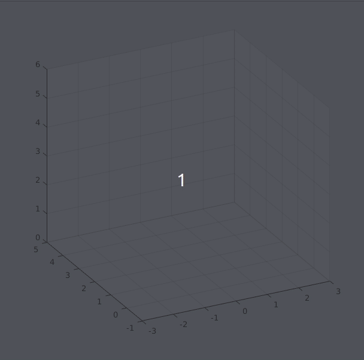
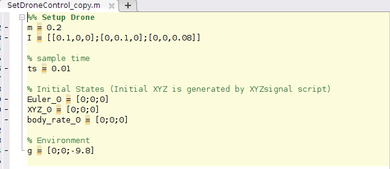
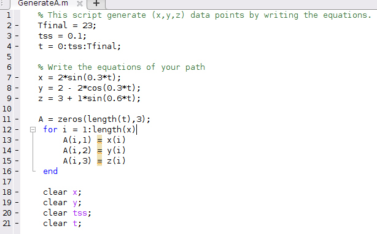
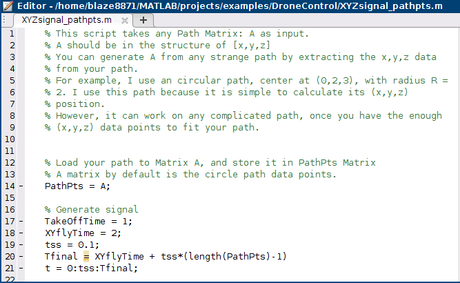
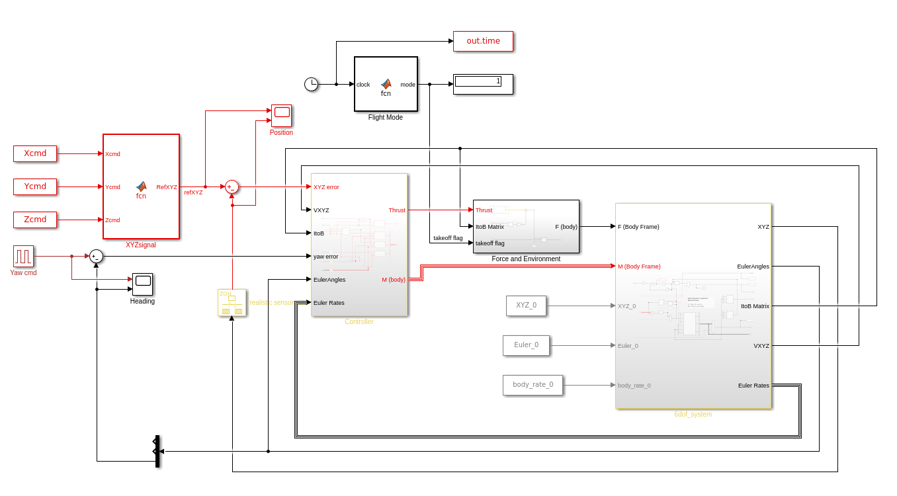
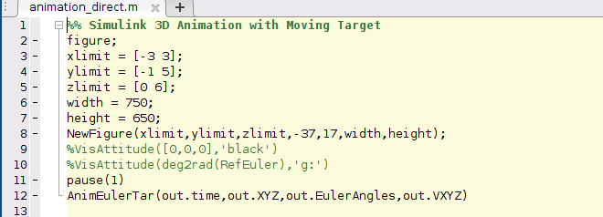

(NEW MODE) 6-Dof Quadcoptor Simulation and Control
Introduction
Instead of "following or surrounding" a moving target, this NEW MODE lets the drone to directly move in a specified path. I made this mode because of several reasons.
- Some viewers ask me if the drone can fly in circular path, or curve.
- I read a paper about Improved Fast Marching Method from my viewer, which focuses on finding the optimized path, so I think this NEW MODE can help a lot.
In additon, considering the purpose of flying along a specified path, the camera axis (blue axis) should be better to point along the direction it is moving forward, so that it can sense obstacles. This is done by the Yaw Header function.
In general, the drone can fly in any path. Try it!
Demo


The drone can now fly along any specificed path. The camera axis (blue axis) will face toward the direction it is moving.
By setting the path A matrix, the drone can fly in different speed. Left drone flies slower, and right drone flies faster.
The right drone also hovers at [2,2,3] after t = 36 sec to show its stability.
Updates
I made some changes to the Path model.
- I set the controller input and ouput signal rate to 0.01 sec.
- I change the structure of X, Y, and Yaw controller. Instead of using a singal PD controller to transform the Ref. angle to Torque, I directly use the EulerRates as the input of derivative of angle. By doing so, it can reduce the noise of the Torque output signal, making it a more practical simulation. If you compare the new controller and the old ones, you can see that the Torque output of the old one has a lot of oscillation, which is impractical.
- I provide an faster path (the path of the right drone) A_default matrix. You can double click it and load this path (the simpler process as the second step).
Steps to Run this Project
- Set the initial values of the drone by running the script SetDroneControl_copt.m
 - There are 2 ways to specify your path:
- Specify by writing the equations of the path. Open GenerateA.m script, run the default path or write down your equations of path.

- If you have a complicated path that cannot be written by equations, load your (x,y,z) data points extracted from your complicated path into A matrix. Make sure you use enough data points to fit the complex path.
- Specify by writing the equations of the path. Open GenerateA.m script, run the default path or write down your equations of path.
- Run the XYZsiganl_pathpts.m script to generate the Command signal, it will need the A matrix as input.
 - Open the New Simulink Model: DroneControl_Direct.slx and run it.
 - Open the New animation script: animation_direct.m and run it to see the result.

MATLAB Project Download Link
Download new Version 2 project:
DroneControl_Path_V2.zip
Download old project:
DroneControl_Path.zip
(please email me to get the unzip password. Thanks!)